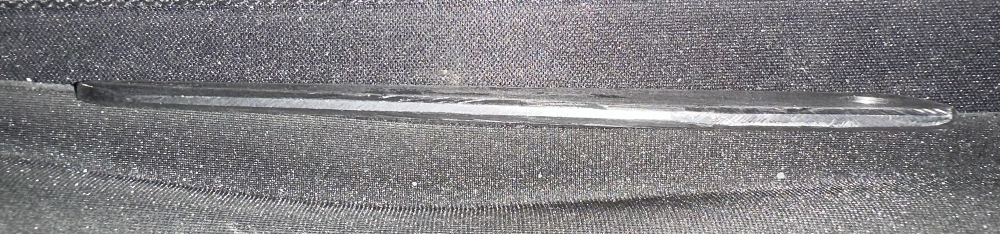
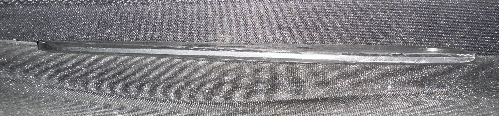

Project Objective
Function and purpose
The drill drift is used to
remove tapered shank tools from a spindle using controlled wedge force. The part must be strong,
straight, and free of burrs.
NIMS Skills Practiced
Job Process Planning, Layout, Benchwork,
Drill Press
- Function: Eject tapered tool
- Critical Feature: Wedge thickness
- Finish Requirement: Deburred edges
Materials Used
- Material: 1018 CRS (Mild Steel)
- Raw Stock: 5 1/8"L x 1/4"W x 1" H
- Reason: Good impact resistance and malleability by hand tools.
Process Planning
- Look over blueprints to determine tolerances, tools, and materials needed
- Gather tools needed, calculate RPMs for drill press (4x8 / .250 = 1,280rpm)
- Measure, marks, and cut stock 1/8" longer than length on print (This is done by ENGTC-166 students)
- Paint with DyChem and scribe layout on part.
- Square one end and deburr for layout
- Drill 1/4" diameter hole, then countersink both sides with 82 degree countersink.
- Cut with hacksaw close to line but staying 1/32" away.
- Finish by filing the outside of part to layout lines.
- Fil radii on piece
- Polish with abrasive cloth or sandpaper
- Inspect part to print dimensions, record and turn in.
In-Process Quality Control
- Measured dimensions with calipers before commencing work
- Verified wedge angle by measuring rise and run of triangle.
- Measure radii with protractor
- Checked overall length before deburring
Final Inspection Results

 

| Feature | Spec | Actual | Status |
|---|---|---|---|
| Length | 5 Long ± 0.015 | 4.995" | PASS |
| Width | 0.125 Wide ± 0.005 | 0.128" | CHECK |
| Height | 0.750 High ± 0.005 | 0.760" | CHECK |
| Taper | 3.31 Long ± 0.015 | 3.450" | CHECK |
| Front Radius | 0.250 R ± 0.005 | 0.300" | CHECK |
| Height to Front Radius | 0.250 R ± 0.005 | 0.282" | CHECK |
| Distance from End to Radius | 0.250 ± 0.005 | 0.422" | CHECK |
| Rear Radius | 0.125 x 45 degrees 2 places ± 0.005 | 0.165" | CHECK |
| Hole | 0.25 ± 0.015 | 0.245" | PASS |
| 82 Degree Countersink | 0.25 ± 0.015 | 0.290" | CHECK |
| Hole .25 Location | 0.375 x 0.375 ± 0.005 | 0.415" | CHECK |
| Top Radius | 0.125 ± 0.005 | 0.070" | CHECK |
| Bottom Radius | 0.125 ± 0.005 | 0.080" | PASS |
| Is part free of burrs and meets finish requirements? | YES | YES | CHECK |
| Is part properly identified? | YES | YES | PASS |
Lessons Learned
- Measure critical dimensions earlier in the process
- Assumed height was to spec when material was acquired. I made my layout based on the height being 0.75' when, in reality, the height of the piece was 1".
- Assumed when the length of the material was cut to 5 1/8", it was the final spec. I had to go back and change the chamfer and radius of the point to make the length to spec.
- Maintain strong vise clamping to prevent shift
- Piece wandered in vise during hacksaw operation making the line curve.
- Deburr before final inspection
- The corners and edges looked freshly cut and the edges weren't rounded like in the design.
- Deburred and rounded the edges with file.
Skills Demonstrated
- Use of hand layout tools
- Blueprint reading
- Bench and layout work
- Drill Press